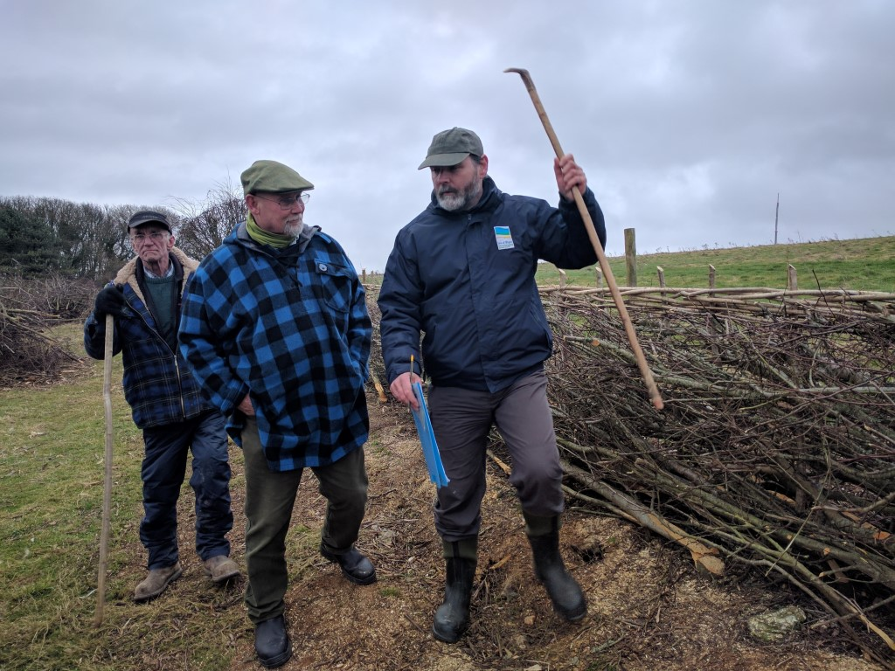

The 25th Annual Hedgelaying Competition was held on 25 February at New Barn Farm, Calbourne by kind permission of Mr Chris Spence.
Lead sponsors in 2017: Landscape Therapy; Wight AONB; Hants & IW Wildlife Trust; Gift to Nature;

With splendid views across the Solent the competition was pleased to return to New Barn Farm to finish the hedge that was started in 2012. The weather was cold but fair, and a good, even hedge had been prepared with nineteen pitches laid - one of the biggest competitions in recent years.
The Open class had nine entrants, predominantly mainlanders. Last year's only novice (and hence winner) Richard Knowles returned to defend his title against two challengers. Seven teams also took part, marking the continued growth of this class. Some new entrants were welcomed to the competition, especially the IW Young Farmers, and the Hampshire and Isle of Wight Wildlife Trust Woodland Apprentices, who mustered two teams.
The competitors put on a good show for the many visitors who came to watch the competition during the day, as well as taking advantage of the excellent tea and cakes provided in the marquee. As usual there was a display of heritage tools from Ralph Griffin, and this year the competition welcomed back a running display of static engines and vehicles from Vectis Vintage Tractors and Engines Club, including the popular steam saw.
The judges took a remarkable time to come to a conclusion, and when the scores were revealed it was clear why - only two points separated second and sixth place in the Open, with 2015 Novice winner Rob Wood, who was seventh in the Open in 2016, making a huge improvement to take the top spot and the AONB Cup. Second was Garry Moore, with Phil Hart in third place. In the Novice class last year's winner Richard Knowles was beaten back into second place by newcomer Matt Gee. The busy team class saw some very high quality work, with Team Hollis winning the class a full six points ahead of second place Dick Pulleine and Alex Holmes.
Results
| Position | Class | Name | Score |
|---|---|---|---|
| 1 | Open | Robert Wood | 64 |
| 2 | Open | Garry Moore | 58 |
| 3 | Open | Phil Hart | 57.5 |
| 4 | Open | David Dunk | 57 |
| 5 | Open | Tom Murphy | 56.5 |
| 6 | Open | Mike Mason | 56 |
| 7 | Open | Russell Woodham | 54 |
| 8 | Open | Chris Sparkes | 46 |
| 9 | Open | Os Hoskyns | 33 |
| 1 | Novice | Matt Gee | 39 |
| 2 | Novice | Richard Knowles | 31.5 |
| 3 | Novice | Adam Hurren | 31 |
| 1 | Team | Team Hollis | 66 |
| 2 | Team | Dick and Alex | 60 |
| 3 | Team | HIWWT 2 | 59 |
| 4 | Team | HIWWT 1 | 58 |
| 5 | Team | Weirds with Beards | 55 |
| 6 | Team | IW Young Farmers | 53 |
| 7 | Team | Dean Team |
Winner of the W Hurst & Sons cup for the best hedge laid with hand tools:
HIWWT 2
The Peter Tunks £20 note award:
An award was presented again on the day by former supreme national champion Peter Tunks, who awarded a £20 note for the straightest stakes and binding. The winner was Rob Wood.
Landscape Therapy Best Isle of Wight Competitor award:
Team Hollis